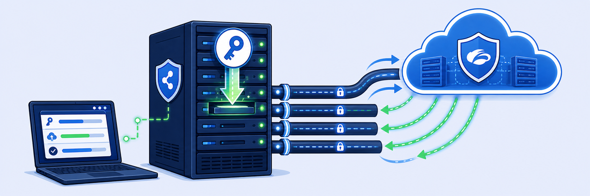

ラボ9: Ransomware Kill Switch ポリシーの構成
RANSOMWARE KILL SWITCH
Zscaler Ransomware Kill Switch は、Zero Trust Device Segmentation に組み込まれたワンクリックの攻撃対象領域削減ツールです。事前設定された重大度レベルで、脆弱なプロトコルや重要なネットワークへのアクセスを即座にブロックします。マシンが感染したときに横方向の移動を止める多層的な適用ポイントとして機能し、「バーチャルヒューズ」（Defcon レベル）のようなエスカレーションパスを用います。
2つのポリシーを作成し、モードを切り替えます。
- Windows Server (VLAN10) から OT (VLAN30) への SSH を許可 — Green モード
- 同じ送信元／宛先の SSH をブロック — Orange モード — その後検証


Kill Switch は段階的な適用ポイントとして機能します — モードを切り替える（例: green → orange）と、どの事前準備済みポリシーが適用されるかが変わります。
- Infrastructure › Connectors › Edge › Zero Trust Branch › Sites に移動し、
POD##-Student-Labを選択します。 - Policies [1] › Configure [2] を選択し、Add Policy をクリックします。

自分の POD サイトを開きます。

Policies › Configure。

Add Policy。
- Action: Accept [1]
- Name:
POD##-Allow-ssh[2] - Source Zone: LAN_ZONE | LAN Zone [3] · Destination Zone: LAN_ZONE | LAN Zone [4]
- Source: Network › Private Subnets [5] · Destination: Network › Private Subnets [6]
- Ports: Custom Port [7] · Value
tcp:22[8]（tcp:22 を検索 → ssh を選択 → Add） - Ransomware Kill Switch: Green [9]
- Add [10] をクリックして保存します。

Accept ルール: Private Subnets、tcp:22 (ssh)、Kill Switch = Green。
- Commit をクリックします（数秒で有効になります）。
- 検証: Student Portal で Windows Server（VLAN10）を開きます。

Allow-ssh ポリシーをコミットします。

Windows Server（VLAN10）を開きます。
- コマンドプロンプトから:
ssh zscaler@10.1.30.10、パスワードZscaler123!。認証後は VLAN30 ホストにログインしています — ウィンドウを閉じます。（ホストを信頼するか尋ねられたらyesと入力します。） - ポリシーの Hit Count が 0 から増えたことを確認します。次に、このポリシーをクローンしてブロックを作成します。

ssh zscaler@10.1.30.10 が green の Allow ルールの下で成功します。
Allow-ssh ルールで Hit Count が増加します。
- Allow-ssh ポリシーの 歯車アイコン [1] を選択し、Clone [2] を選びます。

Allow-ssh ポリシーを出発点としてクローンします。
- Action: Reject [1]
- Name:
POD##-Block-ssh[2] - Source/Destination Zone: LAN_ZONE · Source/Destination: Network › Private Subnets
- Ports: Custom Port ›
tcp:22（ssh を選択 → Add） - Ransomware Kill Switch: Orange [3]
- Clone [4] をクリックしてポリシーを作成します。

Reject ルール: 同じ送信元/宛先/ポート、Kill Switch = Orange。
- Commit をクリックします（数秒で有効になります）。

Block-ssh ポリシーをコミットします。
- Reorder をクリックし、
POD##-Block-sshを位置 2 [1] にドラッグして、Save Policy Order [2] をクリックします。

Reorder をクリック。

Block-ssh を #2 へ移動 → Save Policy Order。

ポリシーが並べ替えられました — ブロックが許可の下の2番目にあることに注目。
- Policies › Access Control › Segmentation › Zero Trust Branch › Kill Switch [1] に移動します。自分の POD が選択されていることを確認し [2]、Switch [3] をクリックして
orange[4] と入力し、Confirm [5] をクリックします。

Kill Switch → POD を選択 →
orange と入力 → Confirm。- Sites › 自分のサイト › Overview でモードを検証します — Ransomware Kill Switch が ON であることを示すポップアップが表示されます。

Site Overview が Kill Switch ON（orange）を確認します。
- Windows Server のコマンドプロンプトを開き、
ssh zscaler@10.1.30.10を再試行します — 接続が 拒否されるようになりました。ブロックは位置2にあっても有効です。Kill Switch モードが適用／優先順位を変えるためです。
推奨: このタスクを完了したら、通常の Green Kill Switch モードに戻してください。

ssh zscaler@10.1.30.10 → 接続拒否。Orange モードがブロックを適用します。- Block-ssh ポリシーの Hit Count が 0 を超えて増えたことを確認します。

Block-ssh ルールで Hit Count が増加 — Kill Switch が機能しています。
🎉 ラボ終了 — EDU-280 完了！ HA 付きの Zero Trust Branch を展開し、マクロ／マイクロセグメンテーションで東西方向のトラフィックを保護し、PBR でトラフィックを誘導し、DNS を制御し、エンドツーエンドで検証し、環境を監視・トラブルシューティングし、Ransomware Kill Switch で模擬攻撃を封じ込めました。
覚えておこう
Ransomware Kill Switch = ワンクリックの段階的な封じ込め。ルールにはモードがタグ付けされます: Green Allow-ssh、Orange Block-ssh（どちらも tcp:22、Private Subnets、VLAN10→VLAN30）。スイッチを orange に切り替える（Kill Switch › POD を選択 › orange と入力 › Confirm）と、一覧の順序に関係なく ブロックが適用されます — 位置2でも勝ちます。検証:
ssh zscaler@10.1.30.10 が 成功 → 接続拒否 に変わります。プライベートサブネット間の SSH を遮断すると横方向の移動が止まります。完了したら green に戻すこと。質問する
メモを追加